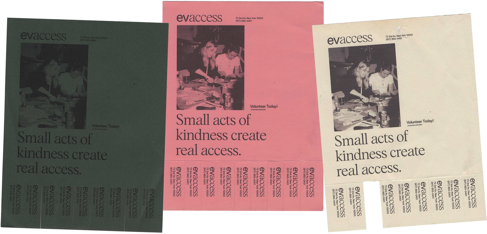
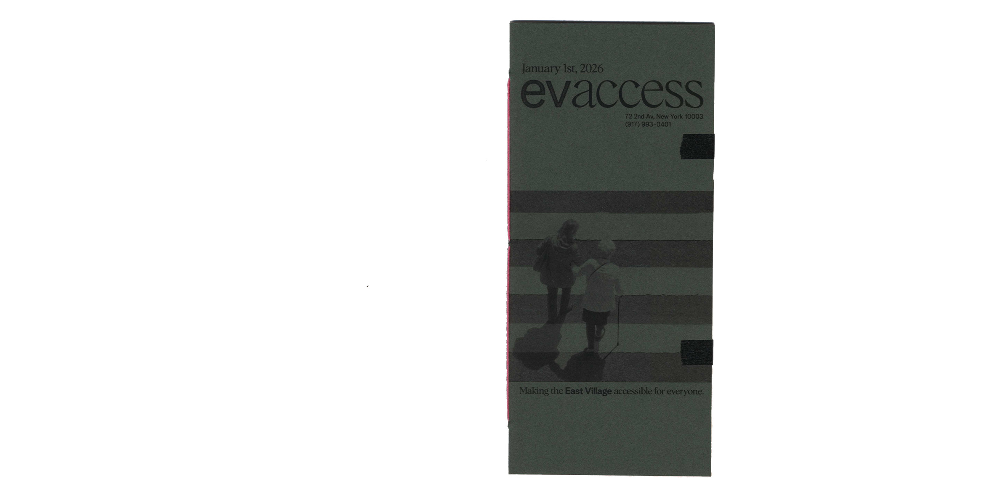
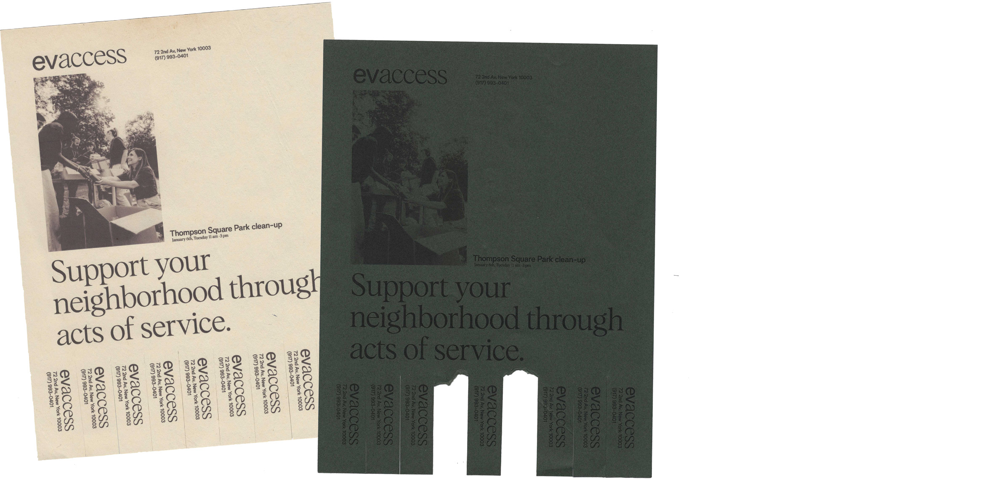

HOME
WORK
ARCHIVE
RESUME/CV
[06]
Public Seating
DESIGN RESEARCH
DESCRIPTION
After walking around my neighborhood, I found that there was a surprisingly low amount of public seating. Sitting on building steps or curbs was normalized rather than having comfortable spaces for people to spend time. My research took form in three parts: documentation, a website, and a proposed solution.
For the short video, I researched New York City's approach to public seating and hostile architecture. I found that the lack of comfortable public space is often intentional, with design choices used to discourage people from lingering or sleeping in certain areas. In turn, these decisions affect local and disabled residents who rely on accessible places to rest. To read more, please see the website below.
My solution came through EVAccess, a community-sponsored initiative that helps residents with mobility difficulties while supporting local businesses in making the East Village a more comfortable and accessible space.
< BACK
NEXT >


PUBLIC SEATING
01 / 13
